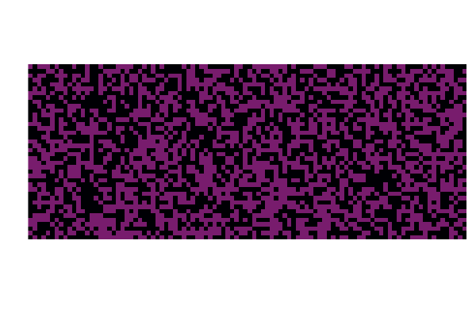
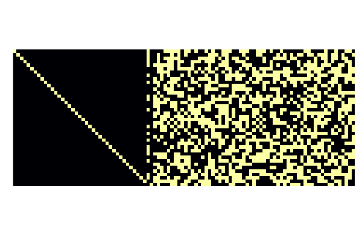
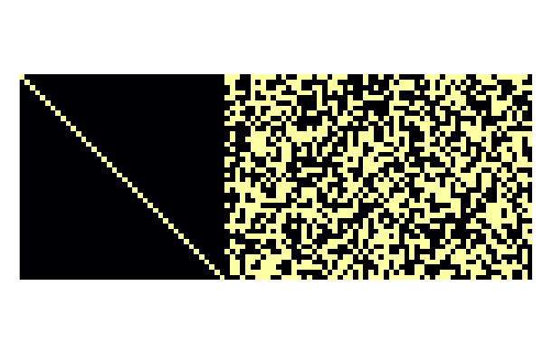
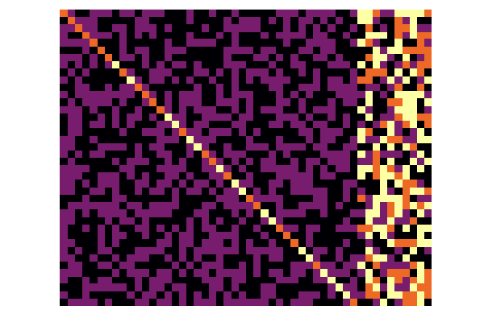
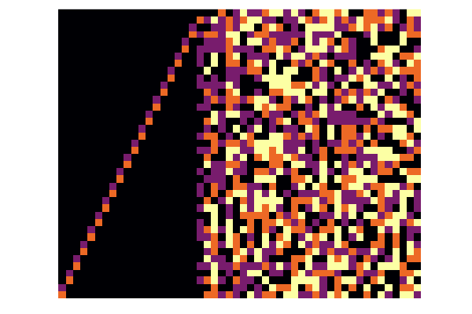
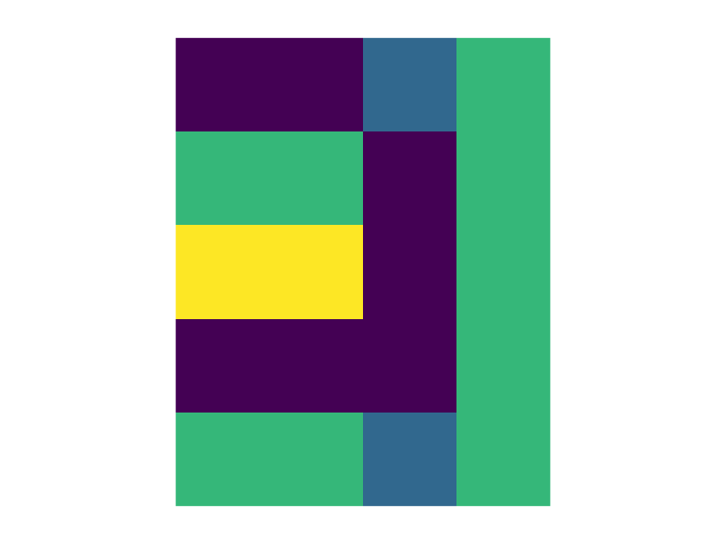
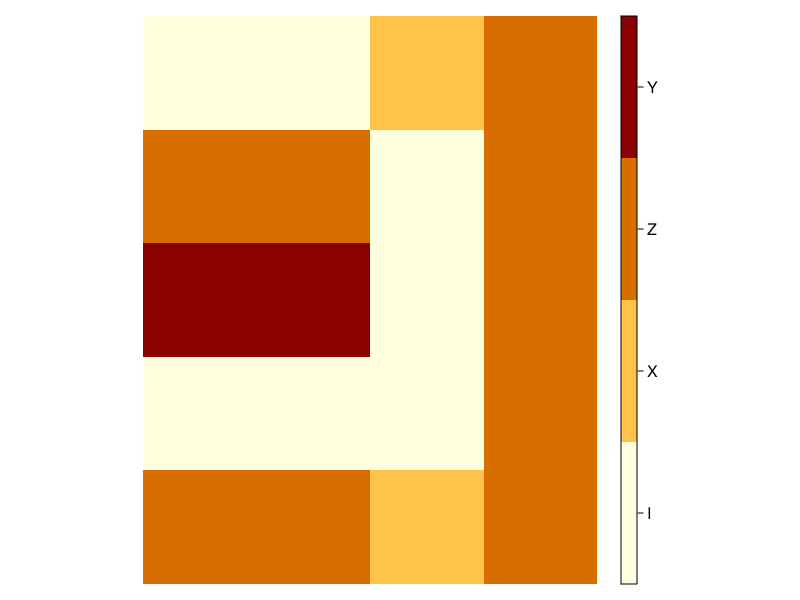
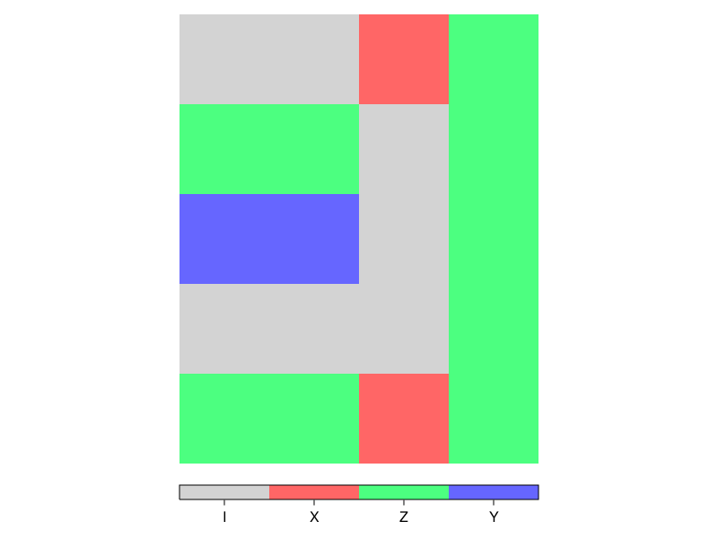

Plotting
Stabilizers have a plot recipe that can be used with Plots.jl or Makie.jl. It simply displays the corresponding parity check matrix (extracted with stab_to_gf2) as a bitmap image.
The recipes are implemented in a separate package QuantumCliffordPlots.jl.
Plots.jl
In Plots.jl we have a simple recipe plot(s::Stabilizer; xzcomponents=...) where xzcomponents=:split plots the tableau heatmap in a wide form, X bits on the left, Z bits on the right; or xzcomponents=:together plots them overlapping, with different colors for I, X, Z, and Y.
julia> using QuantumClifford, QuantumCliffordPlots, Plots
julia> plot(random_stabilizer(40,50), xzcomponents=:split);
julia> using QuantumClifford, QuantumCliffordPlots, Plots
julia> plot(canonicalize!(random_stabilizer(20,30)), xzcomponents=:split);
julia> plot(canonicalize_gott!(random_stabilizer(30))[1], xzcomponents=:split);
julia> plot(canonicalize_gott!(random_stabilizer(30))[1]; xzcomponents=:together);
julia> plot(canonicalize_rref!(random_stabilizer(20,30),1:30)[1]; xzcomponents=:together);
Makie.jl
Makie's heatmap can be directly called on Stabilizer.
using QuantumClifford, QuantumCliffordPlots, CairoMakie
s = S"IIXZ
ZZIZ
YYIZ
IIIZ
ZZXZ"
f, ax, p = heatmap(s)
hidedecorations!(ax); hidespines!(ax); # remove ticks and spines
ax.aspect = DataAspect(); # set a one-to-one aspect ratio
A full Makie recipe is available as well (supporting xzcomponents)
f, ax, p = stabilizerplot(s, xzcomponents=:together)
hidedecorations!(ax); hidespines!(ax)
ax.aspect = DataAspect()
You might have noticed, Makie recipes do not let you edit the axes or figure, rather they only permit you to set the plot content. Which is why we use hidedecorations!, hidesplines!, and DataAspect to further modify the plot.
You can easily add colorbars (and change the colormap) as well:
fig = Figure()
ax, p = stabilizerplot(fig[1, 1], s, colormap=cgrad(:heat, 4, categorical = true))
hidedecorations!(ax)
hidespines!(ax)
xlims!(ax, 0.5, size(s,2)+0.5) # otherwise there is padding
ylims!(ax, 0.5, size(s,1)+0.5) # otherwise there is padding
# set the aspect ratio of the plot
ax.aspect = DataAspect()
# set the aspect ratio of the layout
colsize!(fig.layout, 1, Aspect(1, size(s,2)/size(s,1)))
Colorbar(fig[1, 2], p, ticks = (0:3, ["I", "X", "Z", "Y"]))
Or set a completely custom set of colors:
fig = Figure()
ax, p = stabilizerplot(fig[1, 1], s, colormap=cgrad([:lightgray,RGBf(1,0.4,0.4),RGBf(0.3,1,0.5),RGBf(0.4,0.4,1)], 4, categorical = true))
hidedecorations!(ax)
hidespines!(ax)
xlims!(ax, 0.5, size(s,2)+0.5)
ylims!(ax, 0.5, size(s,1)+0.5)
ax.aspect = DataAspect()
colsize!(fig.layout, 1, Aspect(1, size(s,2)/size(s,1)))
Colorbar(fig[2, 1], p, ticks = (0:3, ["I", "X", "Z", "Y"]), vertical = false, flipaxis = false)